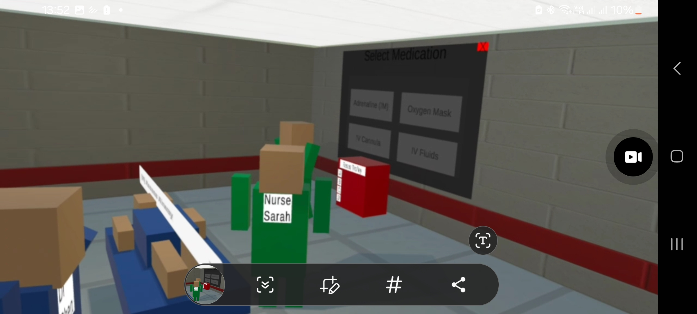
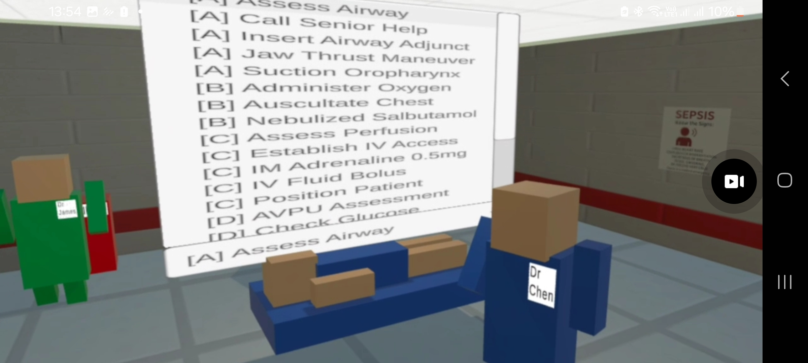
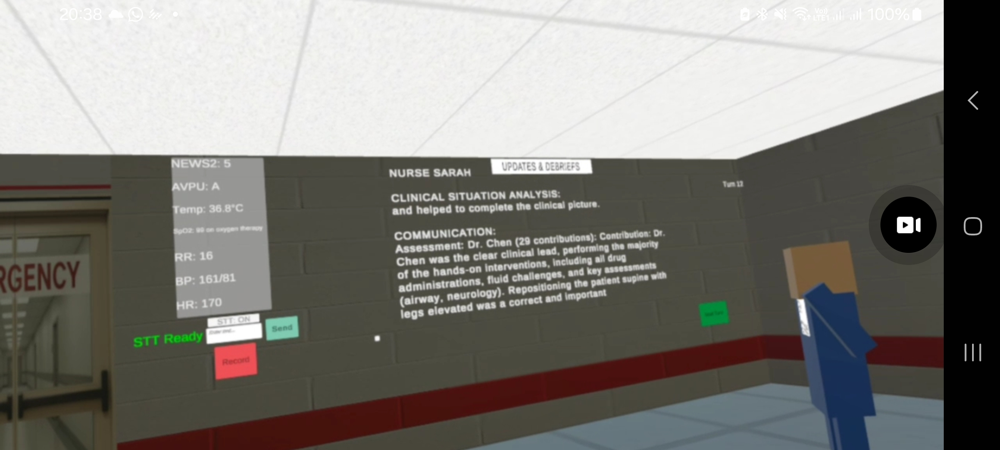
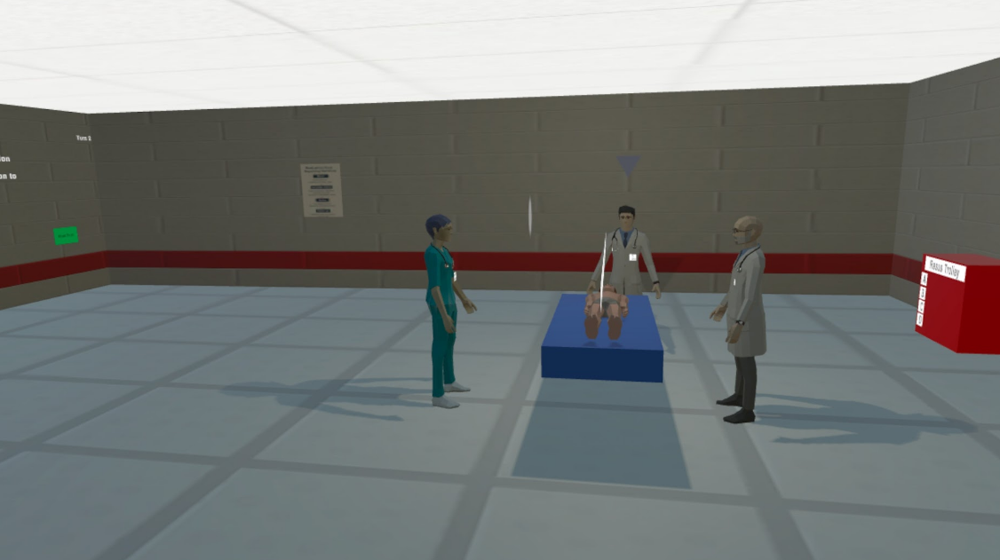
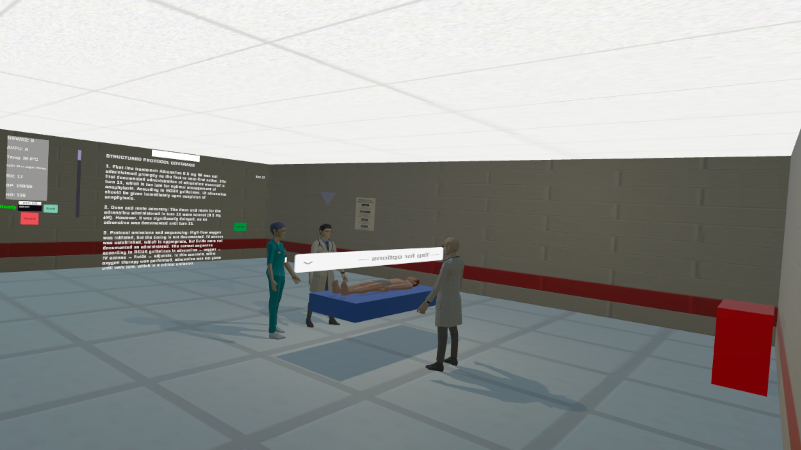
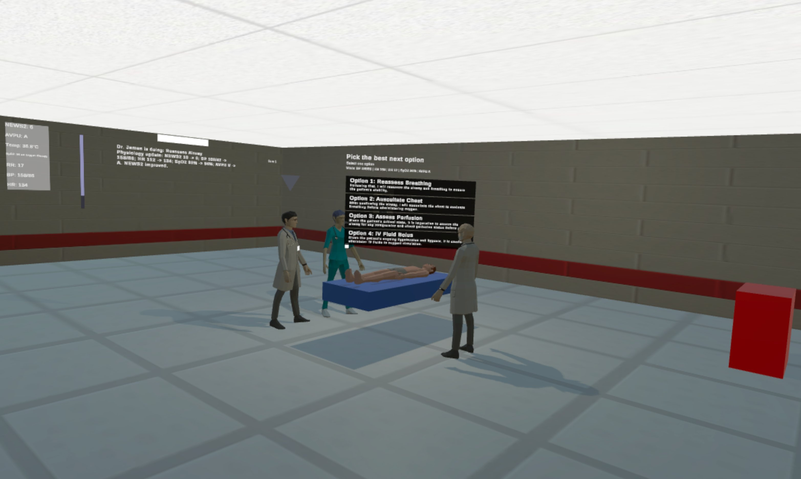
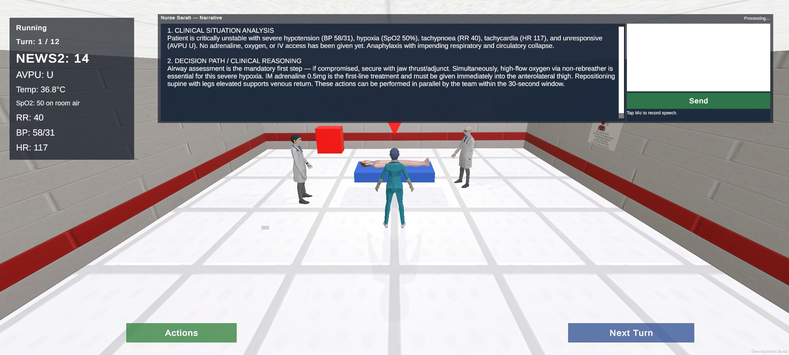

XR3DQuest
A research platform for AI driven clinical simulation in extended reality.
XR3DQuest places a learner in an emergency clinical scenario alongside AI driven colleagues who respond to what the learner actually does. A physiological engine runs underneath, updating vital signs and NEWS2 scoring in response to interventions and to the passage of time. Every clinical action is captured against a structured taxonomy, and the session ends with an automatically generated debrief built from what happened rather than from a script.
It is a research platform rather than a product. It exists to make specific questions about AI driven simulation empirically testable, and every design decision in it has been made with that purpose in mind. It has been used with 134 healthcare trainees across two countries to date.
The platform is built for extended reality, and its clinical core is deliberately separated from everything that presents it. That modularity has allowed the same simulation to be adapted across devices and across game engines when a research question called for it, without any of the clinical logic being rewritten.
It has been implemented in both Unity and Unreal Engine, running the same scenario. Development continued in Unity for the deployable builds, and every study described on this page used the Unity implementation. Putting participants through two engine implementations of the same scenario would need a research reason, and there was not one.
Two Generations
Version 1
The first generation runs on Meta Quest 2 with live inference at every turn.
Learners interact through free text or speech, converted on device, with a structured action menu available alongside. AI driven colleagues hold distinct clinical roles and respond in character to the evolving state of the patient. Actions are organised by an ABCDE taxonomy covering airway, breathing, circulation and disability interventions, from airway assessment and jaw thrust through to intramuscular adrenaline, fluid bolus and glucose check. Unsafe medication attempts are blocked rather than silently executed.
The debrief is generated at the end of the session and attributes contributions across the team, identifying who led, what was done, what was omitted, and where sequencing departed from guideline expectations.



Version 1 is the build behind the technical and safety verification paper accepted to AI in Healthcare 2026 at Imperial College London, and behind both Bournemouth University validation studies.
Version 1.1
The second generation keeps the entire clinical core of version 1 and changes two things: the character models and environment are substantially revised, and three delivery variants were developed to support the Nigerian field study.
| Variant | Hardware | AI delivery | Interaction |
|---|---|---|---|
| Headset online | Meta Quest 2 | Live model inference | Free text, speech, or structured menu |
| Headset offline | Meta Quest 2 | Pre-sampled response library, no network | Structured choice menu |
| Mobile | Android smartphone | Live model inference | Touch first, screen space interface |
The variants exist because the study needed them. Comparing delivery modes only tells you something if the thing being delivered is genuinely identical, so all three run the same scenario, the same physiological engine, the same action logic and the same debrief system. Only the presentation layer, the input modality and the inference path differ. That separation is the experimental control, not a feature list.




Architecture
One simulation core, three presentation layers. Scenario state, physiology, NEWS2 calculation, action parsing, safety logic and debrief generation live in a single shared layer. Each variant supplies its own scene, input handling and bootstrap path. Nothing clinical is duplicated across variants.
Inference behind an interface. Live model calls and the offline library sit behind the same client interface, so the simulation core does not know or care which is answering. Swapping one for the other changes no clinical code.
A pre-sampled response library. The offline variant serves dialogue generated in advance across the reachable clinical state space, keyed by turn, speaker and clinical state. Debriefs are held separately and retrieved by a compact encoding of the decisions taken during the session. Lookup is local and near instantaneous, and the variant makes no network calls at any point.
Speech on device. Speech to text and text to speech run locally rather than through a cloud service, which matters for both latency and connectivity independence.
Studies
| Study | Version | Site | Participants | Status |
|---|---|---|---|---|
| Initial validation (pilot) | v1 | Bournemouth University | 28 | Manuscript in preparation |
| Second validation | v1 | Bournemouth University | Recruitment planned | Q3 to Q4 2026 |
| Delivery mode and platform field study | v1.1 | Achievers University, Nigeria | 106 | Analyses in preparation |
Bournemouth University studies. Conducted under BU Research Ethics Committee ID 66081. The first study examined whether DASEX produces scorable and interpretable data following a single simulation session with a heterogeneous healthcare student cohort. The second uses a revised instrument with a new cohort from the same pool, following the same design.
Achievers University field study. Conducted under BU Research Ethics Committee ID 68822 and Achievers University Health Research Ethics Committee ID AUO/REC/2026/182, with fieldwork in June and July 2026 supported by a Turing Scheme International Mobility Award. Two independent within-subject parts asked whether offline delivery holds up against live inference on the same headset, and whether mobile delivery holds up against headset delivery using the same model. Field notes from this study are written up here.
The protocol, the variant architecture document and the device selection analysis are pre-registered on the Open Science Framework: osf.io/vhwqz
Results from these studies are not reported here. Manuscripts are in preparation or under review, and findings will be linked from Research Notes as they appear.
Evaluation
XR3DQuest is evaluated using DASEX, a 25 item instrument covering five domains: Diagnosis, Adaptation, Safety, Engagement and Teamwork, and eXplainability. DASEX was developed to capture properties specific to AI driven simulation, such as real time adaptivity, safety behaviour and algorithmic transparency, which conventional simulation and usability instruments were not built to assess.
The framework emerged from a systematic review of AI driven characters in XR healthcare simulation published in Artificial Intelligence in Medicine (10.1016/j.artmed.2025.103270).
What Is Not Claimed
XR3DQuest has been evaluated for learner rated simulation quality, usability and workload. It has not been evaluated for clinical competence, knowledge gain, skill retention or patient outcomes, and no claim of educational effectiveness against conventional teaching is made or implied.
Work to date covers a single emergency scenario, two institutions and undergraduate healthcare students. Any conclusions belong to those conditions.
See the Idea in a Browser
Not everyone reading this has a headset to hand. The browser demo is a small interactive piece built so that the concept can be seen rather than described: a ward, a deteriorating patient, a resus trolley, a NEWS2 panel, and a set of scenarios to move between.
It is a demonstrator, and it does its job well. It is also not XR3DQuest. It runs simplified logic in a browser, it does not carry the platform's clinical modelling or AI behaviour, and no result on this site comes from it. Treat it as a window onto the idea rather than a sample of the research build.
XR3DQuest is developed as part of doctoral research at Bournemouth University, supported by a CfACTs Plus PhD Studentship.